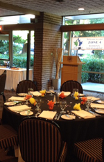

Photo Gallery
2017 Team Winners


2017 Zone 4 Senior Championship


2017 Amateur/Senior & Four Ball Winners

Zone 4 2016 AGM


2016 Zone 4 Seniors



Congratulations - 2016 Provincials


2016 Four Ball Winners


MacAdam Cup 100th Year Celebration


2015 Zone 4 Senior Open Winners


2015 Four Ball - Zone 4 Winners


2015 Zone 3-4 Amateur/Senior Championship*


* Mary Parsons - 4th Runner-up (no photo available)
2015 Zone 4 Senior Championship


2014 Zone 4 Amateur & Senior

2013 Business Women's Championship


2013 Zone 4 Senior Open Tournament Winners*


* Flo McFall - Division C Low Gross, Patricia Lim - Division C Low Net (no photos available).
2013 Zone 3 & 4 Two Ball Tournament

2013 Zone 4 Amateur Women's Championship


2013 Zone 3 & 4 Senior Women's Championship


2012 Beat the Champ

2012 Zone Senior Team

2012 Zone 4 Senior Women's Championship


* Barbara Whidden - 2nd Low Gross Winner Division C 70+, Norah Aucoin - 2nd Low Net Winner Division C 70+, (no photos available)
2012 Business Women's Championship


2012 Zone 3-4 Amateur/Senior Tournament


2011 Assorted Photos


2011 Team Competition


2011 Zone 3/4 Two Ball Winners


2011 Zone 3/4 Amateur/Senior Championship


2010 Assorted Photos


2010 Zone 4 Senior Tournament


2010 Zone 4 Net Tournament


2010 Zone 3/4 Two Ball Tournament


2009 Assorted Photos